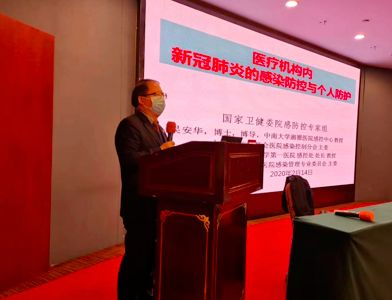
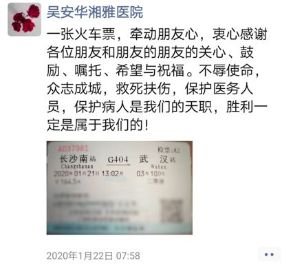
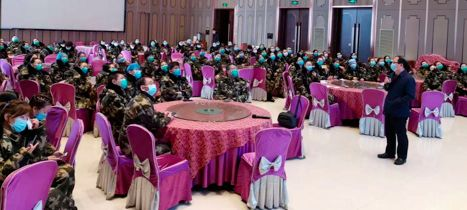

武昌医院院长刘智明病逝 至少已有9位医护因新冠殉职
原文链接 备份链接 我就想站在这里，站在第一线，没有为什么。我觉得，我还可以，我能扛住压力，尽快尽多的救治更多的人、更多的小人物。 2月18日上午10:30左右，武汉武昌医院院长、神经外科专家刘智明因新冠肺炎抢救无效，在同济医院中法新城院 …

口述实录·火线

建议将院感课“挤进”所有医本科的教学计划中，可以先给8-10个学时，避免以后再出现类似的惨痛的教训。
记者 | 黄 祺
“到目前为止，4.2万人的医疗队无一人感染。”3月9日，国务院联防联控机制召开新闻发布会，国家卫健委医政医管局监察专员郭燕红，公布了这一数据。郭燕红专员表示，在武汉，有一支感染控制的专家团队，他们有一项工作就是在每一支医疗队进入到工作岗位之前，专门对他们进行感染控制和防护工作培训，使他们能够做好防护，避免感染，最大限度降低感染风险。
全国各地支援湖北的4万多名医护人员，至今保持了“零感染”的纪录。这个“0”背后，是湖北省截至3月5日，累计确诊病例67592例，累计治愈出院病例41966例等等庞大的数字。
疫情早期，武汉市出现医务人员感染，最新公布的数据是，3000多名感染新冠肺炎的医护人员中，绝大部分是武汉当地医护人员，已经有十多名医护人员因感染新冠肺炎死亡。
前有武汉当地医护人员大量感染的残酷教训，各地医疗队到达武汉后的医院内感染控制，成为头等大事。如果医护人员再出现感染情况，不仅会造成医疗救治力量的削弱，还会让医院里其他患者受到威胁。
中南大学湘雅医院院感专家吴安华临危受命，1月21日从长沙出发，搭乘高铁逆行武汉，为的就是不让医护人员感染的情况再发生。

作为较早到达武汉的中央赴湖北指导组医疗救治组成员之一，吴安华主任在武汉度过了最特殊的春节，迄今已经驻守武汉40多天。在武汉期间，吴安华做了近100场防护培训，覆盖医护人员超过1.4万余人。他曾创下一天7场培训会、讲7个多小时课的“个人纪录”，他和专家组一起确立的“先培训再上岗”策略在保证医护人员“零感染”中发挥了至关重要的作用。
确保所有医疗队医护人员“零感染”有多难？3月8日上午，吴安华主任接受了《新民周刊》的专访。
城市是安静的
医院里却如战场一般

《新民周刊》：1月21日出发到武汉，走得很紧急吗？
吴安华：武汉出现不明原因肺炎后，1月份，我们一直在做院感巡查工作。1月18日、19日我都在我们湖南省省内做医院的院感巡查。1月20日我接到国家卫健委通知，要求我去武汉，但不知道什么原因后来说不用去了，到了21日，又来通知，要求我们立即到武汉。
《新民周刊》：去武汉之前对当地新冠肺炎救治的情况有哪些了解？
吴安华：当时武汉已经有几百个确诊病例，增加的速度很快，1月20日，新冠肺炎被列为乙类传染病按甲类传染病管控，所以当时我就想情况应该是比较严峻了。
1月21日中午1点出发，一个多小时到武汉，后来几天我到武汉各处巡查。武汉外表看起来很安静，但是一到医院，就像个战场一样。
《新民周刊》：国家卫健委为何第一时间就派出了院感专家到武汉？
吴安华：新冠肺炎是个新的传染病，首先要防止它在医院里扩散。当时我们看到已经有医务人员感染的报道了，院感工作的目的是既要保护病人，又要保护医务人员。2003年的非典中，医院内感染的情况非常严重，不少医护人员感染，有些患者也是在医院里被传染的。

病人太多
难以维持正常的就医流程
《新民周刊》：您到武汉第一任务是什么？
吴安华：我们第一个任务是要制定医院内新冠病毒感染预防与控制的指南。我20日到武汉，21日主要是和其他专家一起讨论指南的内容。那天工作到特别晚，差不多半夜才结束。22日，这个指南就发布了，速度特别快。
《新民周刊》：指南的内容是不是针对新冠病毒来制定的？
吴安华：在指南的基本要求里，我们提出了十点要求，到现在看我们当时考虑得还是比较全面的。第一点讲的是预案和流程；第二点讲全员培训；第三点专门讲医护人员的防护；第四点讲关爱医护人员；第五点是要做好医院监测，包括医务人员的医院感染监测和病人的感染监测；第六点是要做好清洁消毒管理；第七点是加强患者就诊的管理；第八点是加强患者教育，因为当时就诊的人比较多；第九点是加强感染暴发的管理；第十点是加强医疗废物的管理。
《新民周刊》：疫情早期，要落实这些指南的要求，难吗？
吴安华：当时发热病人增加太快了，已经不是我们常规看病就诊的流程。
所以这个时候我们院感指南中基本要求的第一点——流程管理就特别重要。指南第二个方面讲到了重点部门的管理。一个是发热门诊，发热门诊医护人员和患者要怎么做好个人防护。一个是急诊科，一个是普通病区，还有一个是对于收治新冠肺炎患者的隔离病区的要求。
重点区域管理这四个方面要求特别重要。当时对新冠肺炎病毒的传播特点，其实了解还不多，所以我们提出标准预防加补充隔离措施，包括接触隔离、飞沫隔离，还有空气隔离这样一些措施。
医护人员的防护文件做出了特别强调。医护人员必须要保持战斗力，不能减员。医护人员的个人防护，我们特别强调怎么样做好标准防护，也强调了高风险操作的时候需要特别注意什么。
《新民周刊》：哪些措施是这次疫情中医护人员避免感染最有效的措施？
吴安华：我们非常有针对性地提出了两个措施，第一个是要正确选择和佩戴口罩，第二个是手卫生，现在看，这两点仍然是最重要的，说明我们的指南有一定的前瞻性。我们第一版院感指南到现在还没有更新，这说明当时考虑得比较周全，各方面情况都考虑到了。
《新民周刊》：除了制定指南，院感专家还要到各家医院去做现场的督导是吗？
吴安华：是的，我们到医院去做调研，了解医院里面的病人收治的情况，包括发热门诊，也包括隔离病房，我们还到宾馆里面去看看医务人员的生活防护到底是不是做得到位。
中央指导组的医疗救治专家组里，有我和北京大学第一医院李六亿教授两名院感专家。我们集体备课，课件在中国感染控制杂志公众号推出，全部分享给医疗队员，课后可以继续学习，课件共更新三次，浏览总量超过10万，说明很多人都关注院感与个人防护。另外还有一组十多位院感专家，由国家卫健委直接派到武汉10家医院。各支医疗队中也有院感专家。相对来说，院感专业人才还是太少，我们做得比较累。目前看来的医务人员零感染，与各医疗队的院感人员、医务人员和管理人员的共同努力是分不开的，在新闻里大家也看到随队院感人员如何监督、指导医务人员做好防护工作。
所有医疗队
必须先培训再上岗
《新民周刊》：大年初一（1月25日），广东省和上海市派出的医疗队到武汉，您当时要做哪些工作？
吴安华：我记得最早到武汉的医疗队有广东医疗队、上海医疗队、他们大概年夜饭都没吃就来武汉了 。从年初一开始我就再也没有休息过，最早培训的就是春节那天培训上海医疗队和广东医疗队。
所有医疗队必须先培训再上岗的建议就是我们院感专家组提出来的，后面我们感觉这是一个非常好的策略，因为这么多医疗队来支援武汉，如果不培训的话，院感控制会变得非常困难。
全国各地的医疗队，医疗队员来自不同科室，感染科的医生护士相对比较少。很多医疗队的医护人员对于这样一种新的传染病防护是不熟悉的，内心难免恐惧。

《新民周刊》：培训采取什么方式？
吴安华：培训主要是讲课的方式，一场培训大概需要60-80分钟。最开始的时候是两个人讲，偶尔会一个人讲。后面支援武汉的医疗队多了，主要就是一个人讲。
1月27日那天，我早上8点出发，与传染病专家蒋荣猛主任一道，在武汉6地为6支省医疗队和1支国家医疗队做了6场岗前培训，接受培训的医疗队员有将近1000人，行程268公里，晚上11点才回到宾馆。2月25日，我自己打破了自己的纪录，这天我一个人讲了7场课，培训了九支医疗队，讲课时间7个半小时，450分钟。我们开玩笑说，这一天培训，大概创造了全国院感培训一个教师讲课时间的纪录，和一个教授一天培训讲课时间的纪录。
《新民周刊》：整个疫情过程中，您对院感控制是不是一直非常担忧？
吴安华：医护人员救治压力非常大，大家很累，这个时候更容易感染。这种时候更需要注意执行院感管理的标准预防，预防医务人员感染。
标准防护非常重要，就是我前面讲到的正确选择和佩戴口罩和手卫生。并不是说戴好口罩和做好手卫生做到就能百分之百地预防传染病，但做到这两点是最基本的，最基本的也就是最重要的。
戴口罩、手卫生看起来特别简单，但其实简单的事情最不简单。比如说手卫生，大家讲的时候都说重要，但从实际操作来讲，不管是国内还是国外，手卫生都是难题。还有就是口罩，每次培训中，反复强调口罩的正确使用，我要花上10分钟的时间。
医学生和医生
都要补上“院感”这一课
《新民周刊》：2003年非典疫情中，医院内感染是个很大的问题。这些年国内院感水平有没有进步？
吴安华：进步当然是有的，但没有我们预想的好。
大家觉得经过SARS的洗礼之后，医院感染控制无论是从机制上还是人员上，应该可以从容地应对传染病疫情，但实际上应对还是没有那么好。SARS之后，我们还经历了禽流感、手足口病等等传染病，应该也受到了锻炼，但还是没有预想的好。当然客观上说新冠病毒传染性超过之前的传染病，疫情太猛烈。
第二个我认为院感能力在各个专业之间不平衡。比如感染科医生、呼吸科医生院感知识掌握得好一点，相对而言其他科的医生，耳鼻喉、眼科、外科等科室的医生，平常跟感染性疾病打交道比较少的，可能就没有感染科医生、呼吸科医生那么警惕性高，也不会像他们一样注意保护自己。
《新民周刊》：新冠肺炎疫情中还是有医护人员感染，未来如何避免这样的情况？
吴安华：我特别建议在医学本科教育阶段，就要加入医院感染控制管理这门课，所有的医本科学生，无论是医疗、护理、口腔、儿科、公卫、药学等专业，只要是医学类本科，都要学习这方面知识。不管是学临床医学的还是预防医学的，本科阶段都要进行医院感染控制的课程教育。
院感管理的一些基本的技能，本科的时候就要告诉医学生。他们在毕业之后，进入医疗机构就可以用起来。并不是说毕业之后医生就不需要培训了，还需要培训，但是他们至少有个基础。医学生毕业进入医院以后，大家都很忙，会把精力用在自己的专科上，很难很好地再学院感防控知识，所以我觉得这个事情一定要改革一下，将院感课“挤进”所有医本科的教学计划中，可以先给8-10个学时，避免以后再出现类似的惨痛的教训。
《新民周刊》：院感在传染病防治中，到底有多重要？
吴安华：院感的意思主要就是指预防和控制医院内的感染。我们国家2006年发布的医院感染管理办法里面，做了明确的规定，医院感染管理是卫生行政部门、医疗机构和医务人员，针对医院感染、医源性感染及相关的危险因素进行的诊断、预防和控制活动，这是医院感染管理的定义。
这次新冠疫情，再次证明了院控的重要性。院感工作一个是要预防病人感染，医院这个环境下，病人受到感染的机会是比较多的，比如手术、插管，再加上医院里有癌症病人、白血病病人等等，往往病人抵抗力比较低，容易感染各种疾病。在这样看似理所当然可能感染各种疾病的环境下，我们想什么办法，采取一些什么措施，减少危险因素，降低病人的感染发生率，这就是院感做的事。
院感的另一个目标是保护医护人员。这次新冠肺炎疫情中全国有3000多医务人员感染，还有不少的医务人员因感染新冠肺炎牺牲，这是一个非常令人痛心的事情。医护人员在医院里面，他面对的是各种各样的病人，也不知谁有感染，谁处在感染的潜伏期。医务人员感染风险也高，所以我们还要想办法，创造更好的医疗条件，保护医护人员。比如眼科，武汉中心医院已经有医生感染新冠肺炎去世，眼科不看新冠病人，他为什么会感染？医生在毫无防备或防护不到位的情况下，给病人做诊疗操作，更容易被感染。所以我强烈呼吁临床各科医师都要重视院感管理，积极参与院感管理，与院感专业人员一道，携手践行感控标准，保护医患安全。


征集令
阳春三月，万物复苏。在抗击疫情的战斗中，我们迎来了春天，《新民周刊》也迎来了新闻线索和故事征集的第二弹。
如今，经历了一个多月休眠的城市正在逐渐苏醒，各行各业都开始有序复工复产。
不论您是企业老板、管理者，还是普通员工；又或者，您是老师、家长，还是学生本人……我们希望了解复工复产复学过程中的困难，或暖心故事。
如果你是抗疫一线的医生护士，疫情期间拍下了珍贵的摄影作品，也欢迎联系我们投稿。
当然，抗击新冠肺炎疫情的相关故事，我们仍然欢迎。
希望广大读者朋友，提供相关线索，说出你的故事，让我们用新闻留存这一切。
《新民周刊》新冠肺炎线索征集值班编辑联系方式（添加时请简要自我介绍）：
周一：应 琛 微信号：paulineying0127
周二：金 姬 微信号：gepetta
周三：黄 祺 微信号：shewen-2020
周四：周 洁 微信号：asyouasyou
周五：孔冰欣 微信号：kbx875055141
周六：吴 雪 微信号：shyshine1105
周日：姜浩峰 微信号：jianggeladandong
✳如你需要捐赠物资，可与以下两位工作人员联系:王勇：WangYong-SH 吴轶君：rommy150708（添加时请注明“捐物资”，方便工作人员快速通过您的申请，谢谢。）
新闻是历史的底稿，你们是历史的见证者。期待你的故事、你的线索！

▼
大家还都在看这些
▼
新民周刊所有平台稿件， 未经正式授权
一律不得转载、出版、改编或进行
与新民周刊版权相关的其他行为，违者必究


原文链接 备份链接 我就想站在这里，站在第一线，没有为什么。我觉得，我还可以，我能扛住压力，尽快尽多的救治更多的人、更多的小人物。 2月18日上午10:30左右，武汉武昌医院院长、神经外科专家刘智明因新冠肺炎抢救无效，在同济医院中法新城院 …
原文链接 备份链接 对病毒的未知、医疗物资缺乏，又因高强度的工作压力影响到免疫力，导致医护感染达到高峰。随着医护人员防护意识、对病毒认识的增强，相关防护措施到位，后期被感染的医护人员应该越来越少 ****文 | 《财经》 …
原文链接 备份链接 澎湃新闻记者 胡甄卿 闫颂阳 新冠肺炎疫情逐渐在多国扩散。由于易感人群密集，韩国、美国等国的护理机构和医院出现了新冠肺炎聚集性感染，美国一家护理中心多名老人因感染新冠肺炎死亡，联邦机构已经介入调查。 在护理机构和医院长 …
原文链接 备份链接 24.02.2020本文字数：3380，阅读时长大约6分钟 导读：全国各地驰援力量也投入到了帮助武汉爬坡跨坎的大战之中。 作者 | 第一财经 吴绵强 2月20日晚上，在武汉江夏区方舱医院隔离的每一位患者都收到了一颗“ …
原文链接 备份链接 以下文章来源于湃客工坊 ，作者镜相工作室 [湃客工坊 澎湃新闻“湃客”创作者平台 | 更宽广的世界，更丰饶的人生](#) 澎湃新闻 湃客镜相 今天，距武汉封城整整一个月。1月23日，这座千万级人口的码头城市落入漩涡，从 …